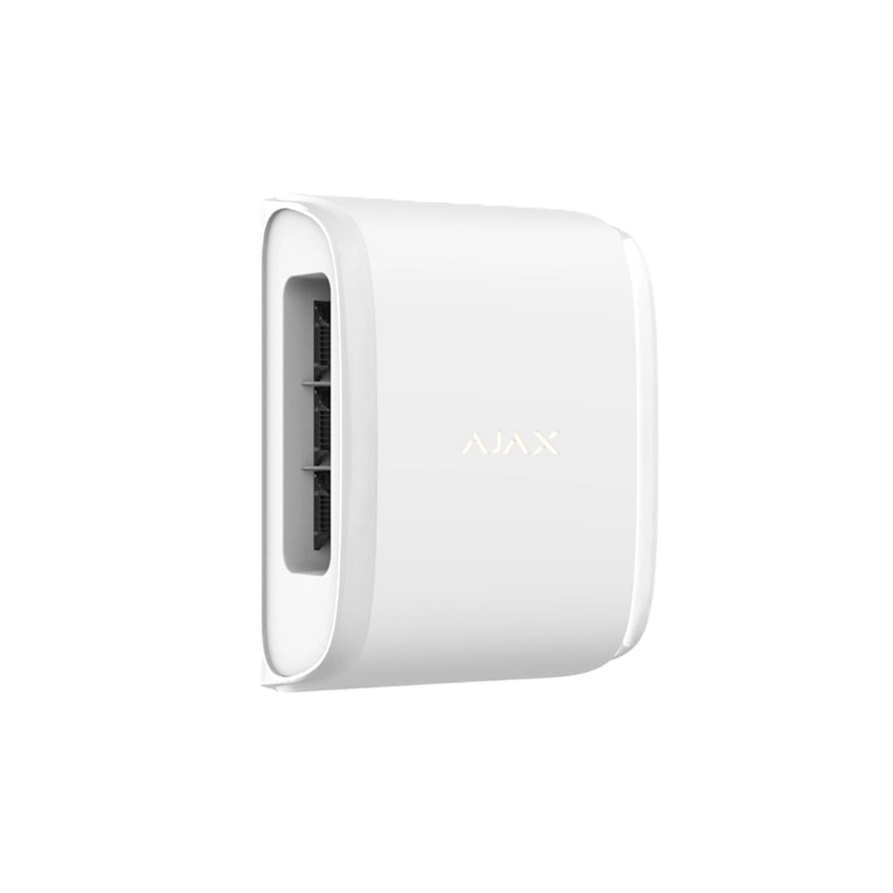
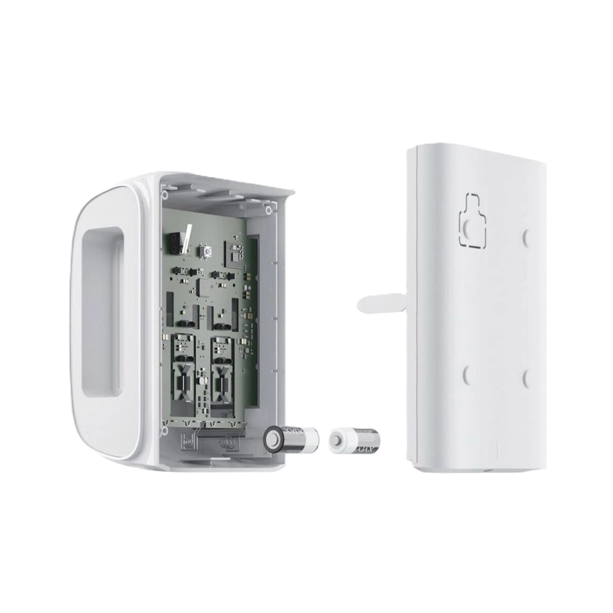

Датчик руху Ajax DualCurtain Outdoor Jeweller типу "подвійна штора"



❮
❯
Бездротовий двоспрямований ІЧ-датчик руху Ajax DualCurtain Outdoor Jeweller типу "штора" призначений для одночасного захисту двох зон або двох протилежних напрямків на вулиці та в приміщенні. Обладнаний чотирма інфрачервоними сенсорами (по 2 на кожну сторону) для створення двох вузьких вертикальних променів виявлення. Кути огляду: 4,5° по горизонталі та 90° по вертикалі для кожної сторони. Дальність виявлення 4-15 метрів для кожної сторони (налаштовується окремо повзунками). Детектування в ближній зоні зменшує сліпу зону біля датчика, відхилення кута огляду на 3° для точного налаштування. Алгоритми SmartDetect та ELSA забезпечують мінімум хибних спрацювань. Імунітет до тварин заввишки до 80 см. Працює при температурах від -25°C до +60°C, захист IP54. Дальність зв'язку з хабом до 1700 м, автономна робота до 4 років від двох батарей CR123A.
Основні характеристики:
Основні характеристики:
- Двоспрямований датчик "штора" для захисту двох зон одночасно
- 4 інфрачервоні сенсори (по 2 на кожну сторону)
- Два незалежні вузькі промені: 4,5° × 90° кожен
- Дальність виявлення: 4-15 метрів для кожної сторони (окреме налаштування)
- Детектування в ближній зоні (зменшення сліпої зони)
- Відхилення кута огляду на 3° для точного налаштування
- Висота встановлення: 0,8-1,3 м (прохід/двері) або 0,5-0,6 м від підвіконня (вікна)
- Швидкість виявлення: 0,3-2,0 м/с
- Імунітет до тварин: заввишки до 80 см
- 3 рівні чутливості (налаштовується)
- Алгоритми SmartDetect та ELSA для захисту від хибних тривог
- Система антимаскування
- Температурна компенсація: -25°C до +60°C
- Дальність зв'язку: до 1700 м
- Автономна робота: до 4 років від 2 × CR123A
- Захист IP54
- Два незалежні промені виявлення на протилежних сторонах датчика
- Захист двох зон одночасно одним датчиком
- Економія на кількості датчиків та батарей
- Контроль проходу з обох боків (двері, коридор, арка)
- Захист вікна з двох сторін одночасно
- Охорона кутового розташування (дві стіни, два вікна)
- Універсальність встановлення — не потрібно вибирати сторону
- Окреме налаштування дальності для кожної сторони
- 4 інфрачервоні сенсори в одному корпусі
- По 2 сенсори на кожну сторону для підвищення точності
- Подвійна технологія виявлення на кожній стороні
- Спрацювання тільки при підтвердженні обома сенсорами сторони
- Різко зменшує ймовірність хибних тривог
- Високоточне виявлення руху з двох напрямків
- Незалежна робота кожної сторони
- Горизонтальний кут: 4,5° (дуже вузький промінь)
- Вертикальний кут: 90° (висока зона покриття)
- Ще вужчий промінь ніж у Curtain Outdoor (8°)
- Максимальна точність виявлення в вузькій зоні
- Мінімум хибних спрацювань від руху в стороні
- Ідеально для вузьких проходів, дверей, вікон
- Вертикальний кут 90° покриває всю висоту від підлоги до стелі
- Окремі повзунки на задній панелі для кожної сторони
- Мінімальна дальність: 4 метри
- Максимальна дальність: 15 метрів
- Можливість різної дальності для різних сторін
- Наприклад: 8 метрів для одного вікна, 12 метрів для іншого
- Точне налаштування під конкретний об'єкт
- Зменшення хибних спрацювань за межами зони інтересу
- Унікальна функція для зменшення сліпої зони
- Верхній ІЧ сенсор отримує додатковий сектор огляду
- Нахил додаткового сектора: 40° вниз
- Фіксує рух близько до самого датчика
- Зменшує сліпу зону під датчиком
- Увімкнення окремо для кожної сторони повзунками
- Корисно при низькому встановленні або захисті вікон
- Виявляє спроби обійти датчик знизу
- Можливість відхилити сектор огляду горизонтально на 3°
- Налаштовується окремо для кожної сторони повзунками
- Точне наведення променя на зону охорони
- Корисно при нестандартному розташуванні вікон/дверей
- Компенсація непрямого встановлення
- Максимальна гнучкість налаштування
- Опція 1: 0,8-1,3 метра від землі (для захисту дверей, арок, проходів)
- Опція 2: 0,5-0,6 метра від підвіконня (для захисту вікон)
- Вибір висоти залежить від завдання
- Для дверей/проходів — стандартна висота 0,8-1,3 м
- Для вікон — встановлення над/під підвіконням
- Детектування в ближній зоні допомагає при низькому встановленні
- Виявляє рух від повільної ходьби (0,3 м/с) до швидкого бігу (2,0 м/с)
- Оптимальний діапазон для виявлення людини
- Не реагує на дуже повільні рухи (гілки дерев)
- Не реагує на дуже швидкі рухи (птахи, листя)
- Направлення лінзи має бути перпендикулярним шляху руху
- Максимальна ефективність при русі поперек променів
- Не реагує на тварин заввишки до 80 см
- Вага тварини не має значення (на відміну від деяких інших датчиків)
- Підходить для будинків з собаками середнього розміру
- Підходить для котів та інших невеликих тварин
- Розпізнає відмінність між людиною та твариною
- Аналіз швидкості руху та теплового сліду
- Зменшення хибних спрацювань від тварин на 99%
- Низька чутливість: для зон з можливими завадами
- Середня чутливість: стандартний режим (рекомендовано)
- Висока чутливість: для максимальної точності виявлення
- Налаштовується через застосунок Ajax
- Можливість налаштування PRO або адміністратором
- Дозволяє оптимізувати роботу під конкретні умови
- SmartDetect — розумна технологія виявлення від Ajax
- ELSA — додатковий алгоритм захисту
- Програмні алгоритми фільтрують помилкові спрацювання
- Аналіз характеру руху та форми теплового сліду
- Відсівання сигналів від тварин, птахів, комах
- Захист від спрацювань на рухомі гілки дерев
- Захист від впливу дощу, снігу, граду
- Мінімізація хибних тривог до рівня менше 1%
- Ефективне виявлення руху в екстремальних температурах
- Працює взимку при морозах до -25°C
- Працює влітку при спеці до +60°C
- Автоматична компенсація чутливості залежно від температури
- Стабільна робота при різкій зміні температури
- Підходить для використання в Україні цілий рік
- Не потребує сезонного переналаштування
- Пропрієтарна захищена технологія Ajax для передавання сигналів тривог та подій
- Дальність зв'язку: до 1700 м (між датчиком і хабом за відсутності перешкод)
- Двосторонній зв'язок з хабом
- Блокове шифрування з плаваючим ключем
- Передовий захист від саботажу
- Миттєві сповіщення про події
- Дистанційне налаштування в застосунках Ajax
- Радіочастотний гопінг для запобігання радіозавадам та глушінню
- Діапазони радіочастот: 866-926.5 МГц (залежно від регіону)
- Максимальна потужність: до 20 мВт (автоматичне регулювання)
- Модуляція: GFSK
- Виявляє різні типи маскування датчика
- Встановлення перешкоди перед лінзами на відстані до 10 см (залежно від матеріалу)
- Зафарбовування лінз датчика
- Заклеювання лінз або сторін датчика
- Миттєве сповіщення при спробі маскування
- Захист від фарби, стрічки, плівки на лінзі
- Важливий елемент професійної системи безпеки
- Тампер проти злому — повідомляє про спробу відірвати датчик від поверхні або зняти з кріпильної панелі
- Захист від підміни — автентифікація пристрою
- Система антимаскування виявляє спроби заблокувати огляд
- Виявлення втрати зв'язку від 36 секунд
- Захист від радіозавад через радіочастотний гопінг
- Сповіщення про низький заряд батареї
- Батареї: 2 × CR123A (попередньо встановлені)
- Розрахунковий строк роботи: до 4 років
- Найдовший термін роботи серед датчиків Ajax Outdoor
- Економне споживання енергії
- Сповіщення про низький заряд батареї завчасно
- Легка заміна батарей без зняття датчика
- Розміри: 174 × 123 × 88 мм
- Вага: 615 г
- Діапазон робочих температур: від -25°C до +60°C
- Допустима вологість: до 95%
- Клас захисту: IP54 (захист від пилу та бризок води)
- Колір: білий
- Міцний пластиковий корпус
- Сучасний дизайн
- Захист від пилу (рівень 5) — пило-захищений
- Захист від води (рівень 4) — бризки води з будь-якого напрямку
- Працює під дощем (бризки, але не струмені)
- Стійкість до бруду та пилу
- Рекомендується встановлення під дашком або навісом
- Всепогодне використання на вулиці з обережністю
- Для повного захисту від струменів води використовуйте Curtain Outdoor (IP55)
- Для захисту дверей/арок/проходів: 0,8-1,3 м від землі
- Для захисту вікон: 0,5-0,6 м від підвіконня
- Призначений для використання на вулиці та в приміщенні
- Направляйте датчик перпендикулярно до шляху руху
- Використовуйте повзунки для налаштування дальності кожної сторони
- Увімкніть детектування в ближній зоні при необхідності
- Використовуйте відхилення кута на 3° для точного наведення
- Уникайте встановлення поруч з джерелами тепла
- Рекомендується встановлення під дашком для додаткового захисту
- Захист двох вікон одночасно одним датчиком
- Охорона дверей/воріт з обох боків
- Контроль проходу через коридор, арку з двох напрямків
- Захист кутового розташування (дві стіни)
- Охорона двох протилежних підходів
- Контроль входу та виходу одним датчиком
- Виявлення руху з двох сторін у вузьких зонах
- Захист по периметру з мінімальною кількістю датчиків
- Економія на обладнанні — 1 датчик замість 2
- ✅ Двоспрямований датчик — два промені в одному корпусі
- ✅ 4 ІЧ сенсори для максимальної точності
- ✅ Дуже вузький промінь 4,5° × 90°
- ✅ Окреме налаштування дальності для кожної сторони (4-15 м)
- ✅ Детектування в ближній зоні — зменшення сліпої зони
- ✅ Відхилення кута огляду на 3° для точного налаштування
- ✅ Імунітет до тварин заввишки до 80 см
- ✅ Алгоритми SmartDetect та ELSA
- ✅ Система антимаскування
- ✅ Температурна компенсація -25°C до +60°C
- ✅ Дальність зв'язку до 1700 м
- ✅ До 4 років автономної роботи
- ✅ Захист IP54
- ✅ Економія — 1 датчик замість 2
- Додавання датчика до системи за кілька кроків
- Вибір рівня чутливості (низький, середній, високий)
- Тестування датчика в режимі реального часу
- Перевірка спрацювання кожної сторони окремо
- Перевірка рівня сигналу Jeweller
- Моніторинг заряду батарей
- Налаштування часу затримки на вхід/вихід
- Перегляд історії спрацювань
- Налаштування сповіщень
- Віддалене тестування без виїзду на об'єкт
- Оновлення прошивки онлайн
- Захист двох вікон кутової кімнати одним датчиком
- Охорона дверей з контролем входу та виходу
- Контроль проходу через арку з двох боків
- Захист двох протилежних підходів до будинку
- Охорона кутового розташування — дві стіни одночасно
- Економія при великій кількості вікон — 1 датчик на 2 вікна
- Контроль входу та виходу з приміщення одним датчиком
- DualCurtain Outdoor має 2 сторони виявлення (vs 1 у Curtain Outdoor)
- 4 ІЧ сенсори (vs 2 ІЧ + 1 мікрохвильовий у Curtain Outdoor)
- Ще вужчий промінь: 4,5° (vs 8° у Curtain Outdoor)
- Детектування в ближній зоні — унікальна функція DualCurtain
- Відхилення кута на 3° — унікальна функція DualCurtain
- Довший термін роботи: до 4 років (vs до 3 років у Curtain Outdoor)
- Захист IP54 (vs IP55 у Curtain Outdoor)
- Без мікрохвильового сенсора (тільки ІЧ)
- Без акселерометра (є у Curtain Outdoor)
- Більші розміри: 174×123×88 мм (vs 155×77×85 мм з навісом)
- Більша вага: 615 г (vs 299 г з навісом у Curtain Outdoor)
- Призначення: захист двох зон одночасно (vs одна зона у Curtain Outdoor)
- DualCurtain Outdoor Jeweller
- Кріпильна панель SmartBracket
- Монтажний комплект
- Дві батареї CR123A (попередньо встановлені)
- Коротка інструкція
- Працює з усіма хабами Ajax (Hub, Hub 2, Hub Plus, Hub Hybrid)
- Підтримка ретрансляторів сигналу (ReX, ReX 2)
- Інтеграція з застосунками Ajax (iOS, Android, macOS, Windows)
- Підключення до пультів централізованого спостереження (ПЦС)
- Підтримка професійного режиму для інсталяторів (PRO)
- Сумісність з усіма пристроями Ajax
- Унікальний двоспрямований датчик — два промені в одному
- Економія коштів — 1 датчик замість 2
- Економія батарей — одна пара на дві зони
- Дуже вузький промінь 4,5° — максимальна точність
- Детектування в ближній зоні — мінімум сліпих зон
- Відхилення кута на 3° — ідеальне налаштування
- Окреме налаштування кожної сторони
- До 4 років автономної роботи
- Надійний захист IP54
7400.00 грн